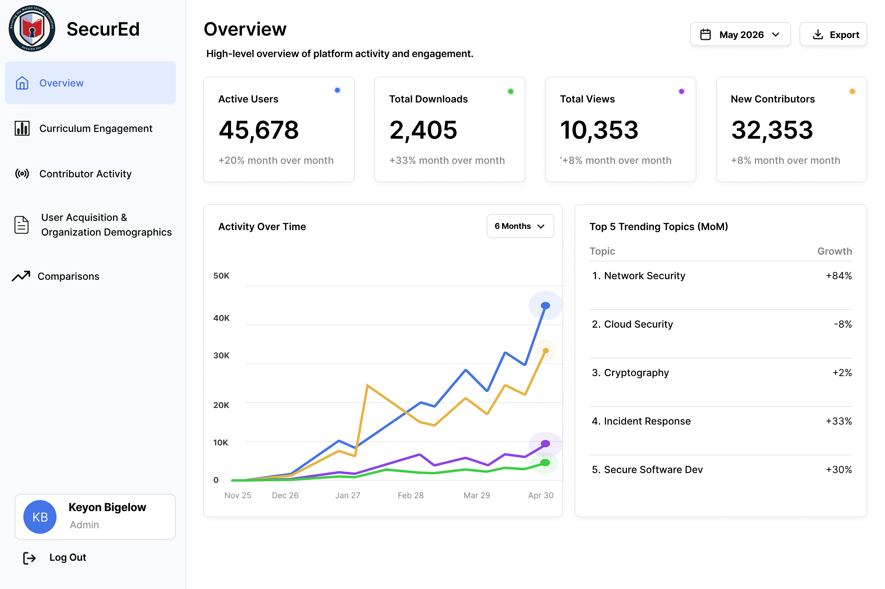
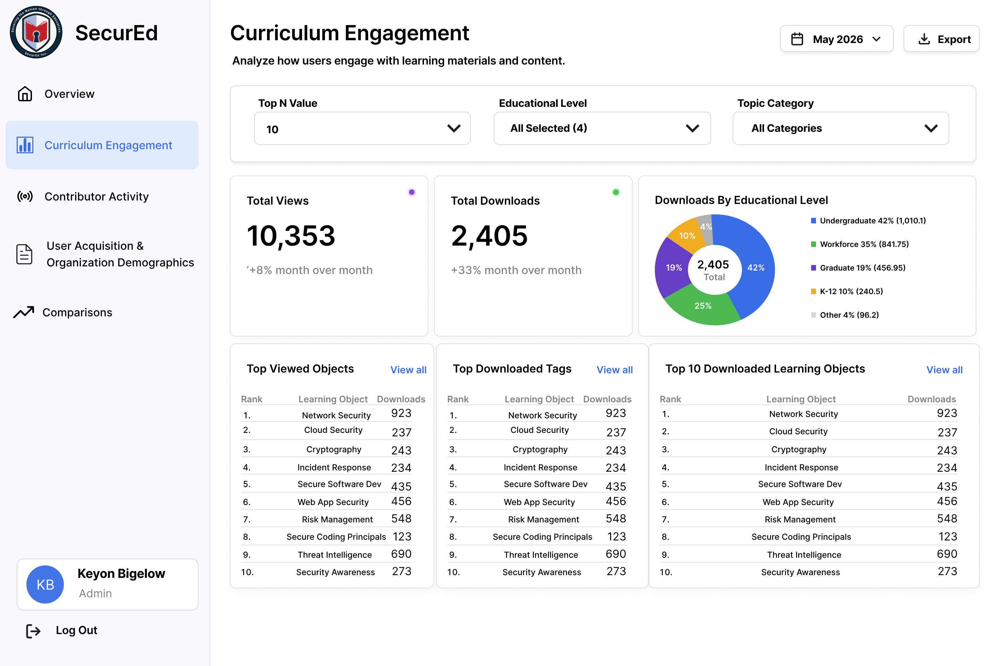
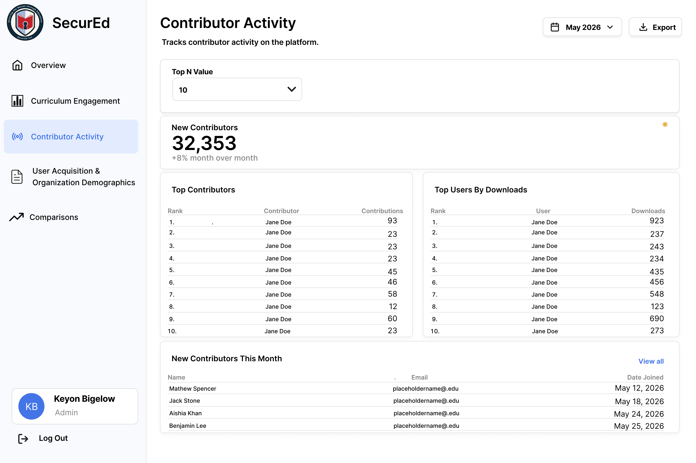
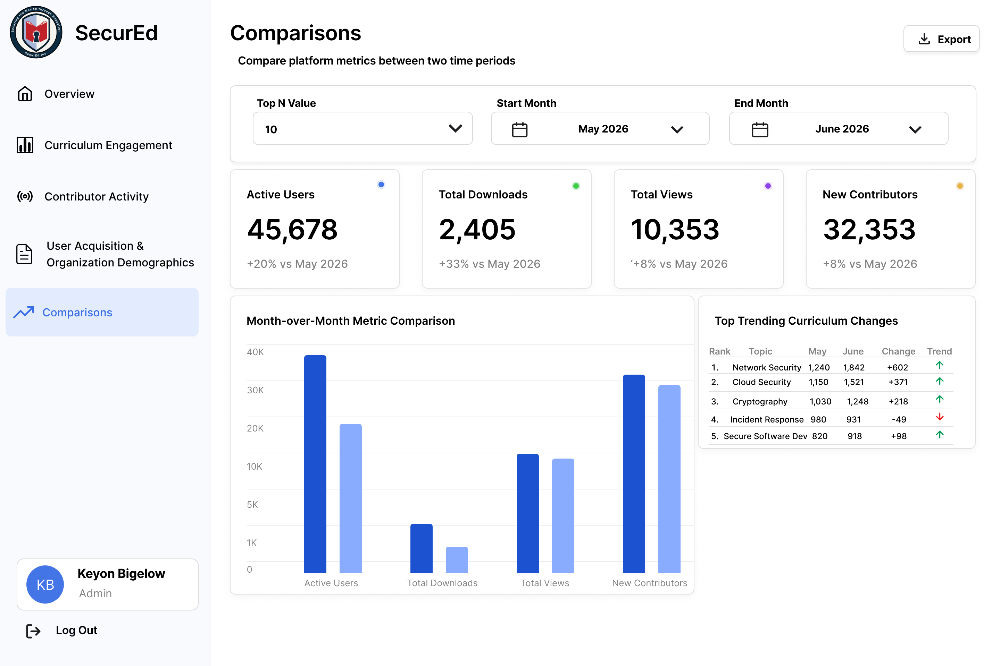

Product design & development
Monthly Reports
Web Tool
An internal dashboard for exploring CLARK curriculum engagement data across selected date ranges.
- Date
- June 2026 - August 2026

Overview
As a Software Development Intern, I helped build a functional React dashboard for SecurEd administrators to explore CLARK curriculum activity across 2,240+ learning objects and 2,740+ resources.
The Problem
Reporting on engagement across a growing curriculum library required data to be gathered from several views. The tool needed to make monthly performance, audience growth, and popular learning topics easy to scan, compare, and share.

Process
Research
I mapped reporting needs to the available CLARK API data and clarified how shared filters should apply across report views.
Design
I used Figma to organize reusable navigation, date-range and Top N filters, and report panels so administrators can move between views consistently.
Build & test
I implemented React, TypeScript, and Material UI components; connected report views to the CLARK API; and handled validation and loading, empty, and error states.

Explore contributors
Contributor views make participation and new additions easier to assess.

Find the signal
Comparison views give changes in activity the context they need.
Outcome
The result is a functional MVP with administrator sign-in, shared report filters, and API-backed tables for key curriculum activity. It establishes the foundation for additional visualizations and export features as the remaining dashboard views are completed.